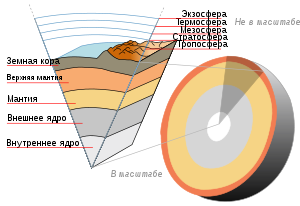
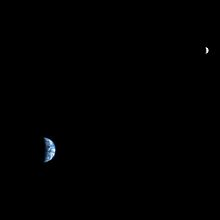

Земля́ — третья по удалённости от Солнца планета Солнечной системы. Самая плотная, пятая по диаметру и массе среди всех планет и крупнейшая среди планет земной группы, в которую входят также Меркурий, Венера и Марс.
Иногда упоминается как Мир, Голубая планета[17][18][19], иногда Терра (от лат. Terra). Единственное известное человеку на данный момент тело Солнечной системы в частности и Вселенной вообще, населённое живыми организмами.
10,8321⋅1011 км³
5,9726⋅1024 кг (3⋅10-6 M☉)
6371,0 км
510 072 000 км²
Научные данные указывают на то, что Земля образовалась из солнечной туманности около 4,54 миллиарда лет назад и вскоре после этого приобрела свой единственный естественный спутник — Луну.
Предположительно жизнь появилась на Земле примерно 4,25 млрд лет назад, то есть вскоре после её возникновения. С тех пор биосфера Земли значительно изменила атмосферу и прочие абиотические факторы, обусловив количественный рост аэробных организмов
Атмосфера определяет погоду на поверхности Земли, защищает планету от космических лучей, и частично — от метеоритных бомбардировок. Она также регулирует основные климатообразующие процессы: круговорот воды в природе, циркуляцию воздушных масс, переносы тепла. Молекулы атмосферных газов могут захватывать тепловую энергию, мешая ей уйти в открытый космос, тем самым повышая температуру планеты. Это явление известно как парниковый эффект.
Состав:78,08 % — азот (N2) 20,95 % — кислород (O2) 0,93 % — аргон (Ar) 0,04 % — углекислый газ (СO2)[16] Около 1 % водяного пара
Температура −89,2 °C 14 °C 56,7 °C
Впервые Земля была сфотографирована из космоса в 1959 году аппаратом Эксплорер-6. Первым человеком, увидевшим Землю из космоса, стал в 1961 году Юрий Гагарин. Экипаж Аполлона-8 в 1968 году первым наблюдал восход Земли с лунной орбиты. В 1972 году экипаж Аполлона-17 сделал знаменитый снимок Земли — «The Blue Marble».
1. Ядро Земли содержит столько золота, которого хватит покрыть всю поверхность нашей планеты почти на 45 сантиметров.
2. Внутреннее ядро Земли имеет радиус около 1220 километров, что сравнимо с 70% радиуса Луны. Кроме того, основываясь на геофизических и геохимических методах, есть предположение, что внутреннее ядро нашей планеты примерно такой же температуры, как Солнце.
3.Молнии на нашей планете ударяют в землю более 8,6 миллионов раз в день.
| Главная | Венера | Земля | Марс | Юпитер | Сатурн | Уран | Нептун |
|---|